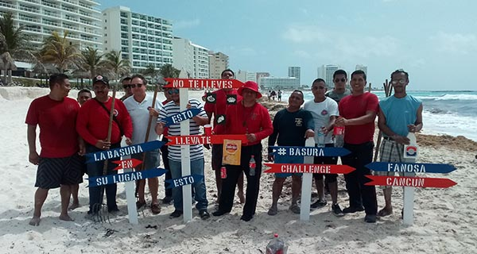

Desde hace más de 50 años, FANOSA® se distingue por su preocupación por las personas y su desarrollo integral, el medio ambiente y la comunidad en general.
Esta responsabilidad social se ve reflejada tanto en colaboradores, clientes y proveedores como en las las comunidades donde tenemos presencia.
FANOSA® tiene un compromiso serio con el medio ambiente, y somos conscientes de que todas nuestras actividades deben planearse y desarrollarse siempre cuidando y evitando cualquier impacto ambiental. Así le heredamos responsablemente un mejor planeta a las futuras generaciones.
Fomentar en todos nuestros colaboradores el uso eficiente de recursos no renovables y minimizar la generación de residuos en las operaciones, así como las emisiones atmosféricas y las descargas de aguas residuales.
Minimizar y evitar en lo posible los impactos ambientales derivados de nuestras actividades.
Involucrar, formar y responsabilizar a las personas que integren la comisión ambiental para que respeten, compartan y apliquen nuestras políticas tanto colaboradores FANOSA®, como proveedores o prestadores de servicios.
Cumplir con la Legislación y Reglamentación Ambiental aplicable a las actividades y operaciones de FANOSA®.
En FANOSA® estamos haciendo compromisos para seguir siendo una empresa responsable con el medio ambiente. Nuestros productos están diseñados para brindar aislamiento térmico, esto significa menores consumos de energía. También contamos con centros de reciclado que reciben poliestireno expandido (EPS), siempre buscando reducir los desechos y aprovechar el material al máximo.
Desde el diseño hasta la entrega; desde las líneas de producción hasta las oficinas, desde una perla de poliestireno hasta nuestros productos terminados, y de la mano de fuentes alternas de energía, la sustentabilidad es algo integral y de carácter primordial para FANOSA®.